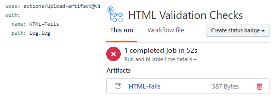

Within a job you can create an artifact. This is a great way to store data and
later retrieve it. These files only last a short time (90 days), but that is
long enough to be accessed if needed. There is a built in action for this and
you can specify the name of the artifact that will be created.
